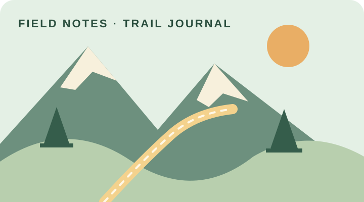
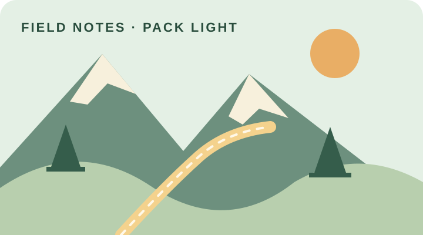
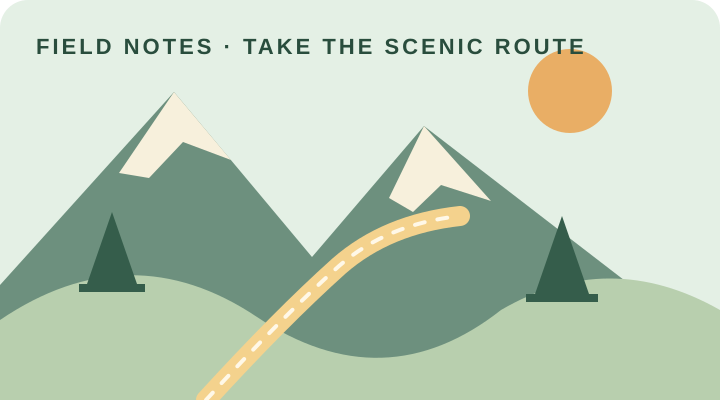
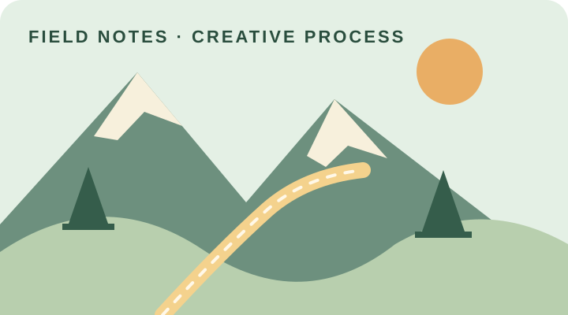

Choose a trail note above to explore one part of the hobby. The guide opens on What; keyboard users can navigate the links and sections in the usual way.
Start here · Home
What Is Day Hiking?
Day hiking is walking a marked path and returning home before night. It can be a short neighborhood greenway loop or a full day among ridges. A good hike is less about speed than paying attention: the texture of a trail, a change in weather, birdsong, and the view earned one step at a time.
- Pick a routeChoose a distance and difficulty that fit the day.
- Bring the basicsWater, a snack, a charged phone, and a simple plan.
- Leave it betterStay on trail and carry every bit of litter back out.
AI image prompt: “Draw a calm, flat-vector day-hiking scene with layered green mountains, a cream switchback trail, and a warm sunrise; use a cohesive field-guide palette.”
The people on the path
Who Hikes?
Hiking welcomes curious beginners, experienced walkers, families, solo explorers, and friends who want time together outdoors. I enjoy the mix of movement and observation: every outing gives me a reason to slow down, notice details, and make a few photographs along the way.
- Go at your paceThere is no single right speed or distance.
- Share the planTell someone your route and expected return.
- Be a good trail neighborOffer space, a greeting, and patience.

AI image prompt: “Create a friendly flat-vector field journal and compass beside a leafy branch, in muted pine, cream, and clay colors.”
Timing the outing
When Is a Good Time to Hike?
Early morning is often comfortable, leaves room for an unhurried route, and gives extra daylight if plans change. Spring and fall can bring mild temperatures, while summer calls for an earlier start, shade, and more water. Always check the local forecast and park hours before leaving.
- MorningStart with enough time to finish in daylight.
- Warm monthsAvoid peak heat and protect yourself from sun.
- After rainCheck for closures and muddy or slippery conditions.
AI image prompt: “Illustrate a sunrise over layered hiking hills, with a clear trail and gentle seasonal colors, as a simple flat-vector field-guide panel.”
Finding a route
Where Can You Hike?
Trails can be found in state and national parks, local nature preserves, greenways, and nearby open spaces. Around Charlotte, checking county and state park resources is a practical way to find maintained routes. Choose a route that matches your experience and confirm current access before you go.
- Local greenwaysGood for an easy walk close to home.
- State parksUse official maps and posted trail ratings.
- Nature preservesFollow access rules and protect sensitive habitats.
AI image prompt: “Design a flat-vector hiking map scene with rolling green hills, a winding cream route, and a simple location marker.”
A simple trail routine
How Do You Get Ready?
Start with a route you can comfortably finish, then check the forecast, trail status, and daylight. Wear sturdy shoes and layers suited to the conditions. Pack water, food, a basic first-aid kit, navigation, and a way to contact help. Turn back if conditions or energy change.
- BeforeShare your itinerary and check park updates.
- DuringDrink regularly, follow markers, and take breaks.
- AfterCheck for ticks, clean footwear, and note what worked.

AI image prompt: “Make a clean flat-vector illustration of a day-hiking backpack, water bottle, and walking poles on a pale sage background.”
A reason to step outside
Why Go Hiking?
Hiking gives me a refreshing break from screens and routines. It creates room for conversation, photography, and quiet focus, while letting the landscape set the pace. Even a short walk can feel like a small reset when I return noticing something new.
- MoveEnjoy gentle exercise at a pace you choose.
- NoticeLook for changing light, plants, and small details.
- ReconnectSpend unhurried time with yourself or others.

AI image prompt: “Draw a peaceful flat-vector scene with one small hiker looking over a broad green mountain valley, using a warm, restrained palette.”
How AI helped
AI Prompts
AI helped draft the page structure, starter copy, accessibility text, and original SVG illustrations. I reviewed and edited the results for accuracy, clarity, and a consistent visual style. The illustrations are lightweight, locally stored SVG files, so no remote image service is required.
- Site structure“Build a one-page hiking hobby site with What, Who, When, Where, How, Why, and AI Prompts sections.”
- Visual direction“Use a cohesive flat-vector field-guide style with pine green, sage, cream, and clay accents.”
- Content pass“Write concise, beginner-friendly day-hiking guidance and useful image alt text.”

AI image prompt: “Create a simple flat-vector field notebook with a pencil drawing a mountain outline; match a calm outdoor field-guide palette.”